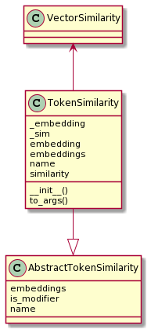

Token Similarity
TokenSimilarity
vectorian.sim.token.TokenSimilarity describes a strategy to compute a similarity
score from embeddings. It consists of two things:
- a specific embedding which serves as the source of vectors (e.g. fastText)
- a strategy to compute a scalar similarity value from two vectors
The first item is modelled by vectorian.embedding.Embedding in the Vectorian, the
latter by vectorian.sim.vector.VectorSimilarity.

VectorSimilarity
vectorian.sim.vector.VectorSimilarity is a strategy that describes how to
compute a scalar similarity value from two given embedding vectors. The resulting
value is expected to lie between 0 (which implies minimum similarity) and 1 (which
implies maximum similarity). Negative values will be clipped to 0 later in the
pipeline.
An obvious choice for VectorSimilarity is vectorian.sim.token.CosineSimilarity,
which computes the cosine of the angle between two embedding vectors.
Other VectorSimilarity implementations based on other metrics are possible. It is
also possible to compute distances and later convert them to similarities (see
example further below).
The following diagram shows which VectorSimilaritys are currently implemented
in the Vectorian.
Modifiers on VectorSimilarity
Using vectorian.sim.token.ModifiedVectorSimilarity and one or more
vectorian.sim.kernel.UnaryOperators it is possible to perform additional
operations on a VectorSimilarity.
Note that this kind of operations are always based eventually on one single
embedding, since all such computations boil down to one root VectorSimilarity,
which usually operates on a single embedding.
For example the following code models a similarity based on the embedding stored
in fastText, where similarity between two vectors u and v is calculated
as cos(phi) - 0.2, if phi is the angle between u and v.
vectorian.sim.token.TokenSimilarity(
fastText,
vectorian.sim.vector.ModifiedVectorSimilarity(
vectorian.sim.vector.CosineSimilarity(),
vectorian.sim.kernel.Bias(-0.2)
))
The currently available unary operators (like e.g. Bias) that can be used
with ModifiedVectorSimilarity are shown in the following diagram:

Modifiers on TokenSimilarity
The Vectorian also allows you to build completely new TokenSimilarity
strategies that are capable of combining different TokenSimilarity instances
that employ different embeddings.
One such example is vectorian.sim.modifier.MixedTokenSimilarity, which takes a
number of TokenSimilarity instances and combines them in a weighted sum.
Here is an example that combines two different TokenSimilarity instances to
build a new mixed TokenSimilarity:
vectorian.sim.modifier.MixedTokenSimilarity(
[
vectorian.sim.token.TokenSimilarity(
fastText,
vectorian.sim.vector.CosineSimilarity(),
),
vectorian.sim.token.TokenSimilarity(
glove,
vectorian.sim.vector.ModifiedVectorSimilarity(
vectorian.sim.vector.CosineSimilarity(),
vectorian.sim.kernel.Bias(-0.2)
)),
],
weights=[0.3, 0.7])
Other combinators are possible. For example, MaximumTokenSimilarity takes the
highest similarity of a number of given TokenSimilaritys for each token.
Accordingly, MinimumTokenSimilarity takes the lowest similarity.
The following diagram shows all such multi-embedding combinators which are currently implemented:

Distances and Similarities
Here is an example of using a Euclidean distance as a VectorSimilarity:
vectorian.metrics.ModifiedVectorSimilarity(
vectorian.sim.token.PNormDistance(p=2),
vectorian.sim.kernel.RadialBasis(gamma=2.5),
vectorian.sim.kernel.DistanceToSimilarity()
)
Using RadialBasis, the distance d is first calibrated such that the range
[0, 1] contains a meaningful distance (with 1 being minimum similarity), then
DistanceToSimilarity is used to compute 1 - d, i.e. to turn the distance
into a scalar similarity value.